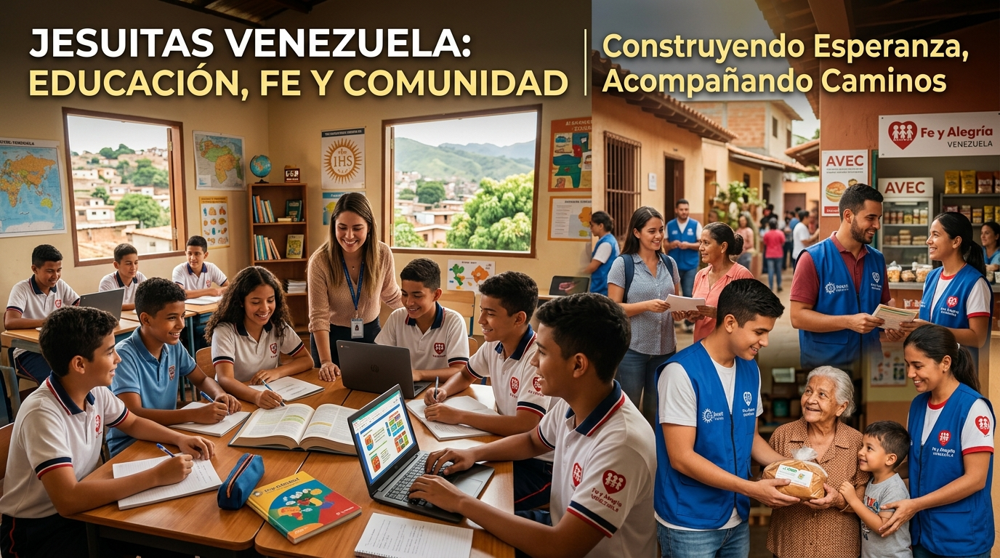
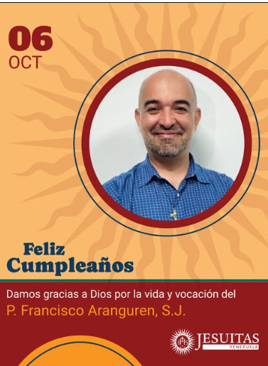
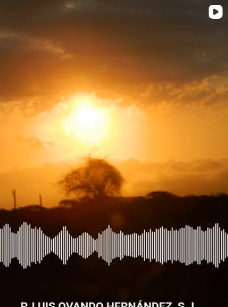
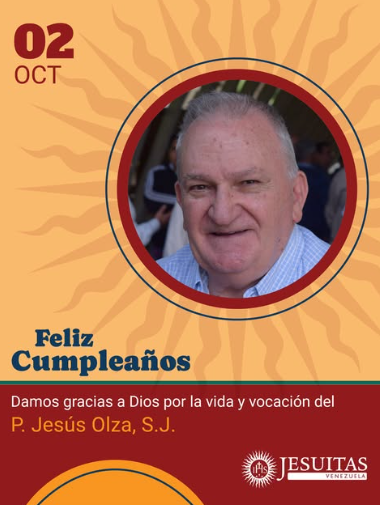

Sector Educación
Educación de Calidad
Desde la UCAB hasta la red de escuelas técnicas Fe y Alegría e institutos universitarios en todo el país.
Ver InstitucionesAcompañando a las familias venezolanas mediante la educación popular, la fe encarnada, la promoción de la justicia social y el servicio ignaciano desde 1916.
Nuestra labor en Venezuela se articula a través de cuatro dimensiones apostólicas fundamentales.
Desde la UCAB hasta la red de escuelas técnicas Fe y Alegría e institutos universitarios en todo el país.
Ver Instituciones
Acompañamiento humanitario y comunitario a través del Centro Gumilla y el Servicio Jesuita a Refugiados (JRS).
Ver Centros Sociales
Ejercicios Espirituales, parroquias populares y acompañamiento espiritual de discernimiento con sello ignaciano.
Ver Parroquias & Retiros
Formación de jóvenes líderes mediante el Movimiento Juvenil Huellas y el acompañamiento vocacional.
Conoce JuventudUna presencia integral estructurada para la transformación del país.
Sedes en Caracas y Guayana. Formación profesional de excelencia, extensión comunitaria e investigación sociopolítica.
Sitio Web OficialRed de más de 175 escuelas técnicas, emisoras IRFA y centros de capacitación profesional en comunidades populares.
Sitio Web Oficial
Centro de investigación y acción social. Editora de la Revista SIC y programas de liderazgo comunitario.
Sitio Web Oficial
Ubicada en Los Teques. Espacio para Ejercicios Espirituales en el silencio, retiros y talleres de discernimiento.
Ver Casa de RetirosMantente conectado con nuestras publicaciones, oraciones diarias y actividades apostólicas.


